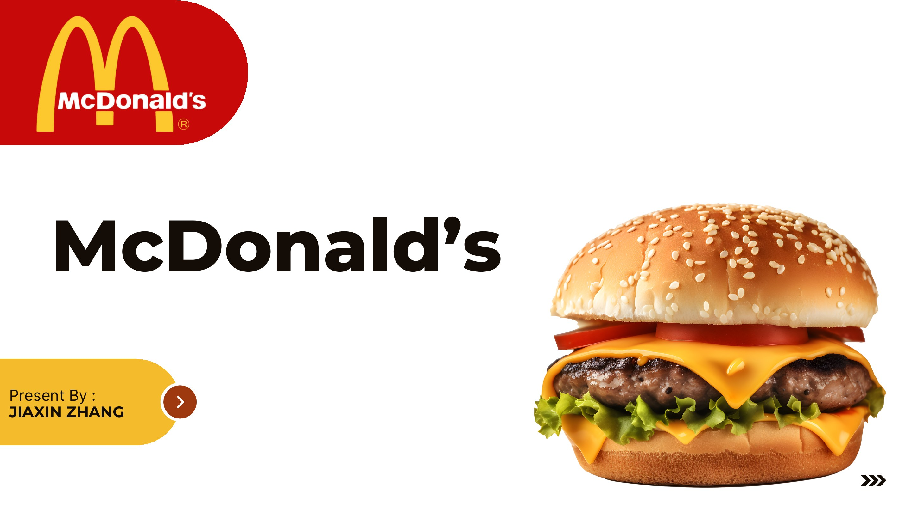
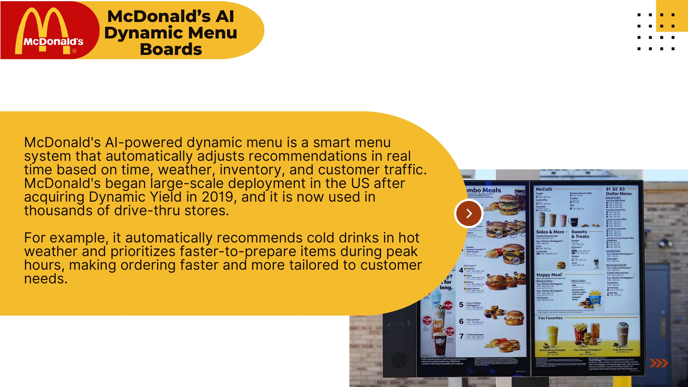
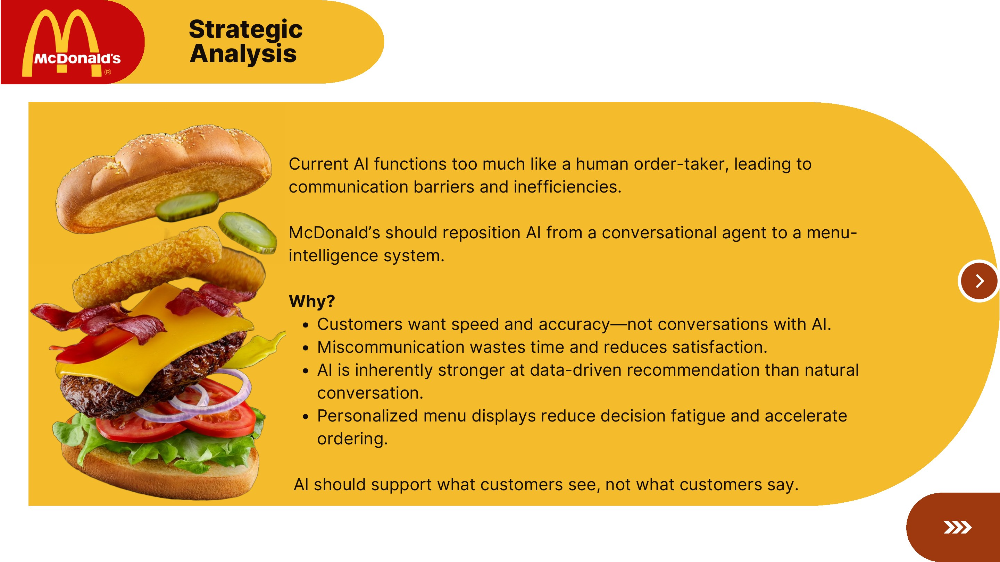

McDonald’s
Repositioning restaurant AI from a flawed conversation to smarter menu guidance.

Conversational AI adds friction where speed matters most.
Drive-thru voice systems struggle with accents, noise and customized orders, forcing repeated corrections and employee intervention. A tool meant to improve efficiency can create longer lines and more frustration.

Customers want accuracy, not a conversation with AI.
AI is better at detecting patterns than interpreting every spoken order. Its most credible role is helping people decide faster, not pretending to replace the human taking the order.
Support what customers see, not what they say.
Dynamic menus can respond to time, weather, inventory, traffic and app history, prioritizing relevant or faster-to-prepare choices while leaving confirmation to people or touch interfaces.

Personalization needs visible boundaries.
A hybrid model must explain recommendations, protect behavioral data and avoid steering children or vulnerable customers toward high-margin or less healthy options without transparency.
From thought
to touchpoint.
- Technology audit
- Consumer analysis
- Strategic recommendation
- Hybrid service model
- Ethical framework
“The smartest use of AI is often the least theatrical one: put prediction where it removes a decision, not where it creates another conversation.”